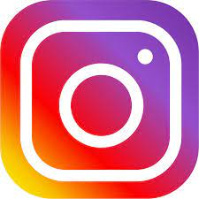
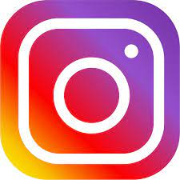

Caleb Esiso
ALT/SOE/023/3754
About Me

 

Why ALT School
Growing up, I’ve always been fascinated by the capabilities of technology without even knowing it was called 'tech.' When I started this program, I knew nothing about the tech industry because I was a total newbie. I chose ALT School over others because my interest isn't just to become a successful software engineer, but also to have a smooth onboarding into the tech industry at large. I identified ALT School as the perfect vehicle to put me in that direction. It's been over a month into this program, and I believe I made the right decision in choosing ALT School.
My Goals and Aspirations
As I navigate through this program, I anticipate a transformative journey. At the program's conclusion, my aspiration is to be well-equipped and prepared for the dynamic and competitive job market. I hope to secure a well-paying position in the tech industry, one that not only sustains me financially but also challenges and fulfills me intellectually. The journey isn't just about technical proficiency but about gaining a deeper understanding of the industry's intricacies, trends, and the larger technological landscape. I aim to be not just a participant but a contributor to this ever-evolving field.
It's important to acknowledge my starting point: a total newbie. But it's precisely this "blank slate" status that excites me. I wish to measure my growth, not only in terms of knowledge and skills but in the personal growth that comes from venturing into unfamiliar territories, tackling challenges, and broadening my horizons.
Overall, the path ahead is uncertain, and there's a sense of anticipation for the adventure that lies ahead. While I may not have all the answers, I'm excited to see what the world has in store for me. I firmly believe that this program is a stepping stone towards a future filled with possibilities, and I'm ready to embrace the wonderful adventure that awaits.